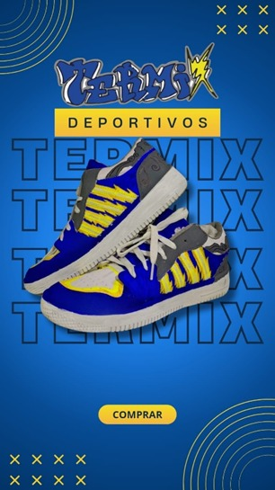
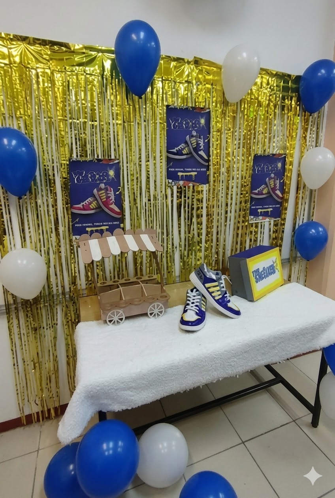
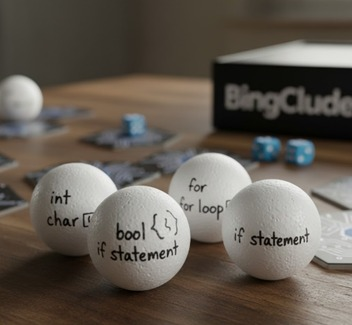
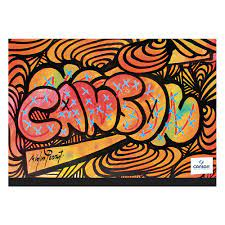
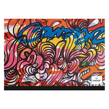
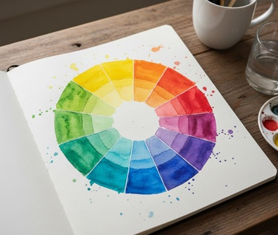
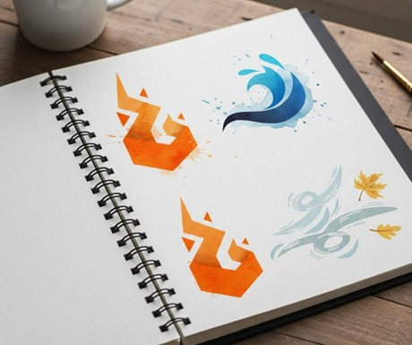

Marketing
Actividades Realizadas
- Creación de una empresa desde cero.
- Estrategia publicitaria para el juego "Bingclude" (Bingo de programación).
- Diseño de identidad, concepto y público objetivo.
- Planeación de estrategias de promoción.
Habilidades Desarrolladas
- Creación de marca (Branding).
- Segmentación de mercado.
- Desarrollo de propuestas creativas.
- Estrategias de comunicación.
¿Cómo se aplican estas habilidades?
- Analizando necesidades del público.
- Creando conceptos atractivos y funcionales.
- Diseñando estrategias visuales y promocionales.

Evidencia: Presentación del proyecto


Evidencia: Material publicitario
Publicidad y Diseño Gráfico
Actividades realizadas
- Técnicas tradicionales: acuarela y grafito.
- Círculo cromático realizado con acuarelas.
- Logotipos basados en elementos (agua, fuego, viento, nieve).
- Desarrollo de un book creativo.
Habilidades desarrolladas
- Creatividad conceptual y teoría del color.
- Manejo de técnicas artísticas manuales.
- Composición visual.
- Adaptación de conceptos naturales a diseño.
¿Cómo se aplican estas habilidades?
- Creando propuestas visuales funcionales y atractivas.
- Aplicando fundamentos de composición.
- Transformando conceptos abstractos en elementos gráficos.


Evidencia: Book de logotipos naturales


Evidencia: Trabajos en acuarela y grafito